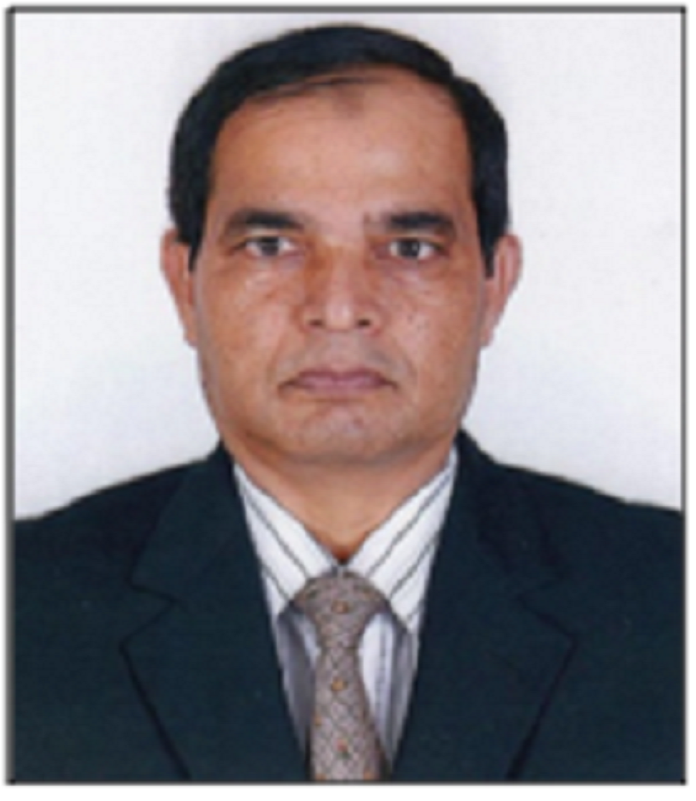

Dr. Mohd Abdur Rashid
Professor and Chairman
Dept. of Electrical & Electronic Engineering
Faculty of Engineering and Technology
Noakhali Science and Technology University (NSTU)
Noakhali-3814, Bangladesh.
Phone: +88-0199827326 (m), E-mail: rashid68@yahoo.com
Scopus ID: 45061264800 Google Scholar ID:Sl5R_iMAAAAJ

Professor and Chairman
Dept. of Electrical & Electronic Engineering
Faculty of Engineering and Technology
Noakhali Science and Technology University (NSTU)
Noakhali-3814, Bangladesh.
Phone: +88-0199827326 (m), E-mail: rashid68@yahoo.com
Scopus ID: 45061264800 Google Scholar ID:Sl5R_iMAAAAJ
TEACHING EXPERIENCE
| Post/Institution | From | To | Years | Months | Days |
|---|---|---|---|---|---|
| Lecturer, BIT Khulna | 9/6/1993 | 19/8/2000 | 7 | 2 | 11 |
| Assistant Professor, KUET | 20/8/2000 | 18/7/2005 | 4 | 10 | 29 |
| Senior Lecturer (Asst. Prof.), UniMAP Malaysia | 16/7/2010 | 30/10/2013 | 3 | 3 | 15 |
| Associate Professor, UniSZA Malaysia | 18/11/2013 | 30/4/2017 | 3 | 5 | 12 |
| Professor, NSTU | 7/5/2017 | Till to date (16/2/2019) |
1 | 6 | 16 |
| Total | 18 | 5 | 9 |
POST-DOCTORAL RESEARCH EXPERIENCE
JSPS Postdoctoral Fellow Dec. 2008–July 2010
Department of Information Engineering, University of the Ryukyus, Japan
Performed Tasks:
• Conducted research on data dissemination techniques in wireless network.
• Developed a simulation model for the analysis of Iran’s nuclear conflict.
• Published research outcome in journal and conference proceedings.
• Wrote a technical report for the sponsoring organization JSPS.
Department of Information Engineering, University of the Ryukyus, Japan
Performed Tasks:
• Conducted research on data dissemination techniques in wireless network.
• Developed a simulation model for the analysis of Iran’s nuclear conflict.
• Published research outcome in journal and conference proceedings.
• Wrote a technical report for the sponsoring organization JSPS.